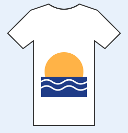
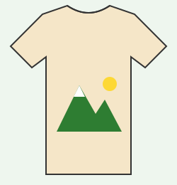
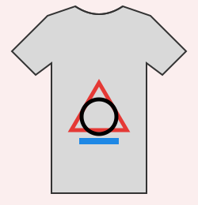

Camisetas diseñadas a tu manera

Camiseta blanca de algodón con un sol sobre las olas. Perfecta para el verano.

Camiseta beige con una montaña nevada y el sol. Para los amantes de la naturaleza.

Camiseta gris con figuras geométricas en colores básicos. Un diseño moderno y sencillo.
Tinta Libre es una pequeña empresa que diseña y vende camisetas personalizadas. Todos nuestros diseños son originales y se imprimen en prendas de algodón de buena calidad. Además, puedes enviarnos tu propia idea y la convertimos en una camiseta única, solo para ti.
| Producto | Tallas | Precio |
|---|---|---|
| Camiseta manga corta | S, M, L, XL | 15 € |
| Camiseta manga larga | S, M, L, XL | 19 € |
| Sudadera | S, M, L, XL, XXL | 29 € |
¿Buscas inspiración para tu diseño? Visita Google.